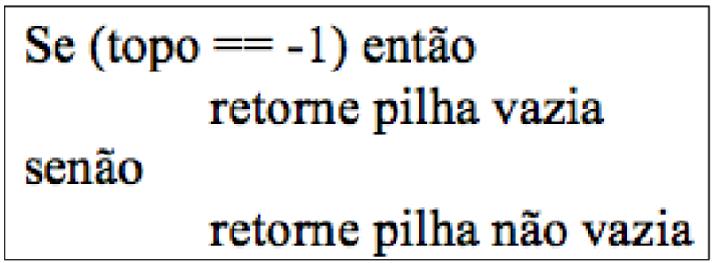
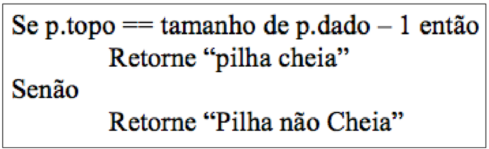
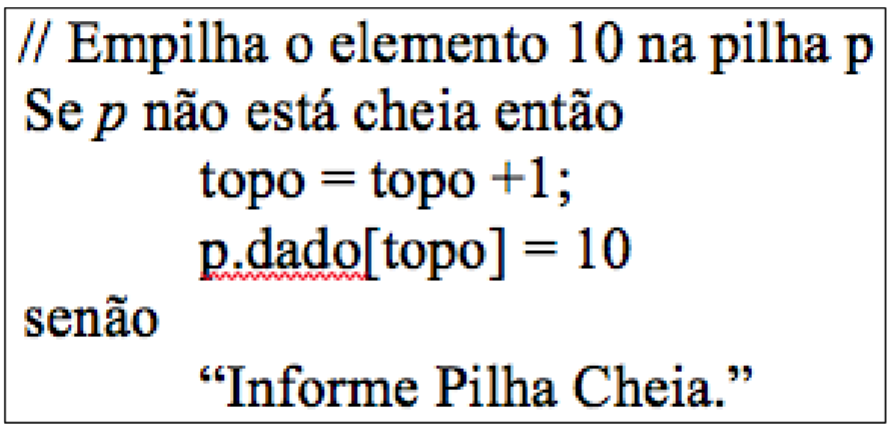
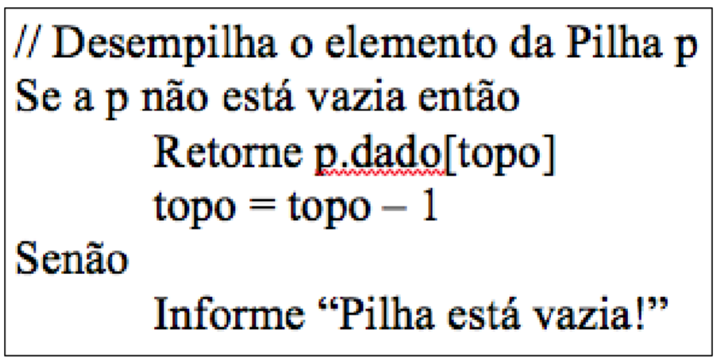

Explore os conceitos de Filas e Pilhas com animações interativas.
Uma pilha é uma coleção ordenada de ítens na qual os itens podem ser inseridos e retirados a partir da última posição, chamada topo da pilha. Ou seja, ela segue o princípio LIFO (Last-In, First-Out), que significa "o último a entrar é o primeiro a sair".
A melhor analogia é uma pilha de pratos. Você coloca um prato no topo da pilha e, quando precisa de um, retira o prato que está no topo. Não é possível retirar um prato do meio ou da base sem antes remover todos os que estão acima dele.
insere(): insere um novo elemento na pilhacheia(): Verifica se a pilha está cheiavazia(): Verifica se a pilha está vaziaremove(): Remove um elemento da pilhaimprime(): Imprime todos os elementos da pilha.Inicialmente o índice topo é inicializado com –1. Isto indica que a pilha está vazia. Desta forma pode-se implementar um teste para verificar se a pilha está vazia da seguinte forma:
Obs: Pode-se retornar o valor do topo no caso de não vazia.
É importante verificar a realização do teste de “overflow” antes de efetivamente inserir o elemento na pilha. Este teste pode ser implementado da seguinte forma:
Inserção / Empilhamento
Remoção / Desempilhamento

Uma Fila é uma estrutura de dados linear que segue o princípio FIFO (First-In, First-Out), que significa "o primeiro a entrar é o primeiro a sair".
Pense numa fila de supermercado. A primeira pessoa que chega à fila é a primeira a ser atendida e a sair. Novas pessoas chegam (enqueue) no fim da fila, e as pessoas são atendidas (dequeue) no início da fila.
cheia(): verifica se a fila está cheiavazia(): verifica se a fila está vaziainsere(E): insere o elemento E na Fila;remove(): remove um elemento da Fila.imprime(): imprime todos os elementos da Fila, do primeiro ao último Assim como nas pilhas, as operações básicas de uma fila também têm complexidade de tempo de O(1).